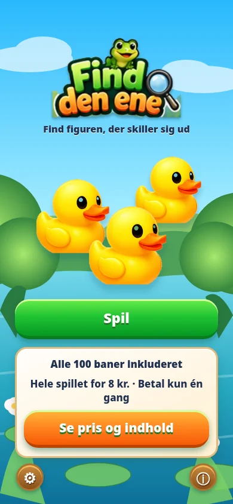
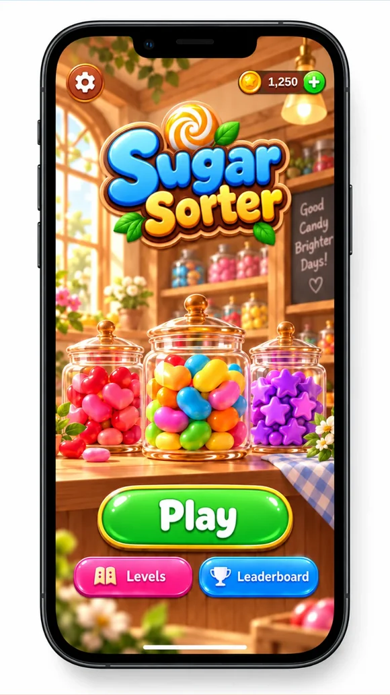
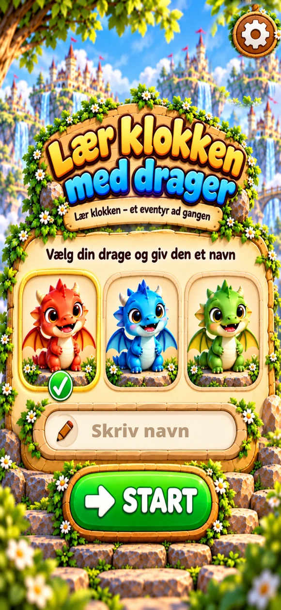

UdgivetFind den ene
Find den ene figur, der skiller sig ud. Et roligt observationsspil med 100 baner.
Læs om spilletGRAFF ENTERTAINMENT
Små spil med plads til nysgerrighed, koncentration og fordybelse. Se, hvordan de spilles, og hvad der er på vej.

UdgivetFind den ene figur, der skiller sig ud. Et roligt observationsspil med 100 baner.
Læs om spillet
På vejSugar Sorter er et farverigt sorteringsspil, hvor du flytter kugler mellem glas og samler samme slags.
Læs om spillet
UdgivetLær klokken gennem små opgaver, venlige drager og tydelige danske instruktioner.
Engelsk version på vej
Læs om spillet Udgivet
UdgivetSkyd de røde tårne ned, og beskyt de blå. Et strategisk fysikspil med 100 baner.
Flere sprogversioner på vej
Læs om spillet